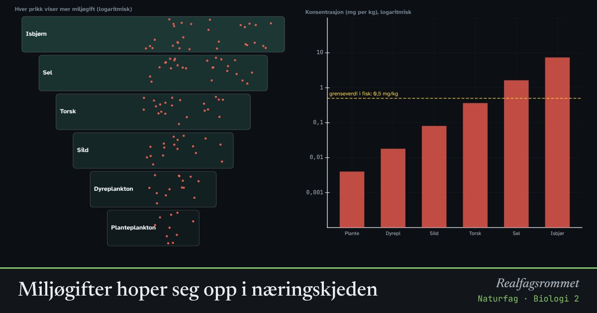

Miljøgifter hoper seg opp i næringskjeden
Noen miljøgifter brytes nesten ikke ned og lagres i fettet. Et dyr får i seg litt med hver matbit og skiller lite ut, så mengden øker gjennom livet. Rovdyr som spiser mange slike dyr, får enda mer.
Start animasjonen
Formler
Om animasjonen
Bioakkumulering: Et stoff som tas opp raskere enn det skilles ut, hoper seg opp i kroppen. Fettløselige stoffer som PCB og metylkvikksølv har lang halveringstid i kroppen. Derfor har eldre og større fisk mer.
Biomagnifisering: Et rovdyr spiser mange byttedyr gjennom livet og får i seg giften fra alle. Konsentrasjonen blir høyere for hvert ledd i næringskjeden. Toppredatorer som sel og isbjørn får de høyeste nivåene.
Stoffer som er vannløselige eller brytes ned, skilles raskt ut og hoper seg ikke opp. Grafene bruker logaritmisk skala: hver strek er ti ganger mer.
Tiltak: Mange miljøgifter er forbudt gjennom internasjonale avtaler, som Stockholmkonvensjonen. Mattilsynet gir egne kostråd, blant annet for gravide, om enkelte fiskeslag. Tallene i modellen er forenklet.
Prøv dette
- Hvor mange ganger høyere er konsentrasjonen av kvikksølv i isbjørn enn i planteplankton?
- Hvorfor har en gammel torsk mer kvikksølv enn en ung?
- Hvorfor hoper det vannløselige stoffet seg ikke opp?
- Halver utslippene. Hva skjer med nivået i toppredatoren?
Kompetansemål
- Naturfag: Miljøgifter i næringskjeder og tiltak for helse og miljø
Mer om økologi og populasjoner
- Rovdyr og byttedyr
- Hvor mange fisk er det i vannet? Fangst–gjenfangst
- Eksponentiell og logistisk vekst
- Energistrøm og næringskjeder
- Klimaendringer og artenes utbredelse
- Karbonkretsløpet og CO₂ i atmosfæren
Mer om klima, miljø og bærekraft
- Drivhuseffekten og jordas strålingsbalanse
- Karbonkretsløpet og CO₂ i atmosfæren
- Havforsuring: CO₂ gjør havet surere
- Klimaendringer og artenes utbredelse
- Rovdyr og byttedyr
- Energistrøm og næringskjeder
- Grønn kjemi: atomøkonomi
- Årstider, dagslengde og solinnstråling
- Regnskygge og føhn: hvorfor Bergen er våtere enn Oslo
- Flom: regn, jord og asfalt